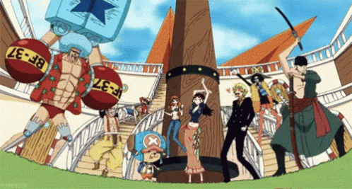

One Piece (ワンピース Wan Pīsu, lit. "Um Pedaço"?) é uma série de mangá escrita e ilustrada por Eiichiro Oda. Os capítulos têm sido serializados na revista Weekly Shōnen Jump desde 22 de julho de 1997, com os capítulos compilados e publicados em 100 volumes tankōbon pela editora Shueisha. One Piece conta as aventuras de Monkey D. Luffy, um jovem cujo corpo ganhou as propriedades de borracha após ter comido uma fruta do diabo acidentalmente. Com sua tripulação, os Piratas do Chapéu de Palha, Luffy explora a Grand Line em busca do tesouro mais procurado do mundo, o "One Piece", a fim de se tornar o próximo Rei dos Piratas.
Com seu primeiro episódio exibido no Japão em 1999, One Piece segue lançando novos episódios até hoje. Ao todo, o anime já tem mais de 990 capítulos. Não à toa, o aclamado programa que segue as perigosas aventuras dos Piratas Chapéus de Palha ganhou o apelido de "anime infinito". Mas isso não impede o sucesso da produção por todo o mundo. Na verdade, One Piece segue conquistando novos admiradores e mantendo sua já consolidada base de fãs, que pode conferir aqui.